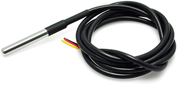
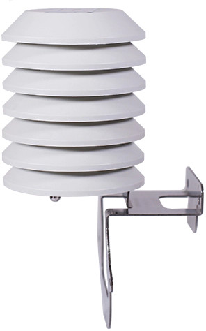
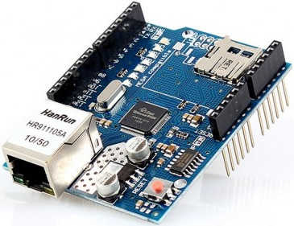

Arduino
Arduino is een opensource-computerplatform om op een eenvoudige manier microcontrollers allerlei taken te laten uitvoeren. Standaard is bv. de Arduino UNO reeds uitgerust met digitale en analoge in- en uitgangen, maar door middel van enerzijds uitbreidingskaarten (EN: shield) en anderzijds uitbreidingsprintplaatjes opgebouwd rond een bepaalde sensor (EN: breakout board) nemen de mogelijkheden enorm toe.
Een Koi Pond monitor is dan ook een logische uitdaging.

Vooreerst dienen de te meten parameters opgelijst te worden:
- Watertemperatuur
- Omgevingstemperatuur
- Waterniveau
- ...
De DS18B20 is een temperatuurssensor die gebruik maakt van het 1-wire protocol en bestaat in waterdichte uitvoering met een kabellengte van 3 m. Door het eigen adresseringssysteem kunnen meerdere sensoren parallel geschakeld worden op dezelfde bus d.w.z. zonder extra digitale in- en uitgangen te gebruiken.

Naast de voor de hand liggende watertemperatuur kan zo ook de omgevingstemperatuur gemeten worden wanneer men de sensor afschermt van de zon en tegen de regen.

In plaats van het voortschrijdend gemiddelde om de opeenvolgende temperatuursmetingen uit te middelen/dempen, wordt een exponentieel filter gebruikt. Beide methodes tonen een gelijkaardig gedrag maar het exponentieel filter is eenvoudiger te implementeren.
Het Ethernet shield gebaseerd op de W5100 Ethernet chip laat toe om uw Arduino UNO op uw computernetwerk aan te sluiten via een RJ45-kabel. De SD-functionaliteit zal in deze toepassing niet gebruikt worden. Uiteraard bestaat er een gelijkaardige oplossing via Wi-Fi.


Annex - Exponential filter
An exponential filter is a recursive filter i.e. the new value yn is based on the previous value yn-1 and a new reading/measurement xn (after time step Δt).
yn = α xn + (1 - α) yn-1
with smoothing factor/coefficient α.
The first value is obtained as (i.e. initialization)
y1 = x1.
In comparison with a moving average, both methods show roughly the same distribution in error when
α = 2 / (N + 1)
with the number of readings N used in the calculation of the moving average (i.e. mean of the last N readings).
For a moving average over 10 measurements, an equivalent smoothing factor of α = 0.1818 needs to be used. The advantage of an exponential filter compared to a moving average filter is that no array of readings needs to be stored.